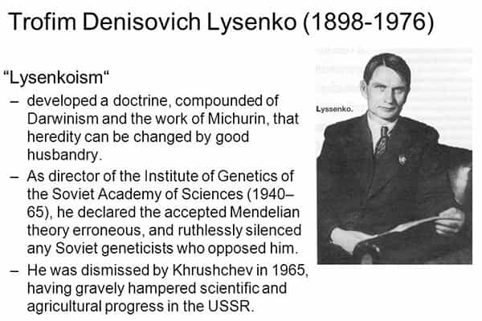
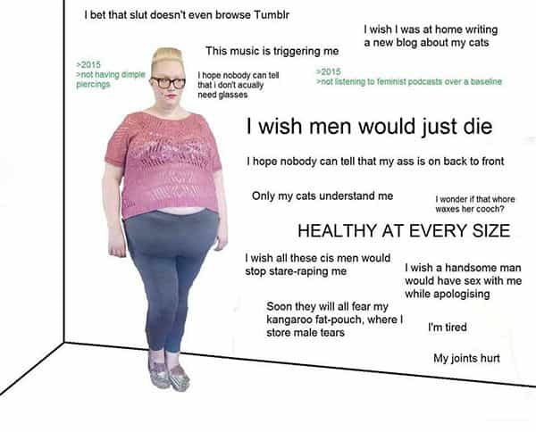

André is a young European who left his decaying country in 2012 for greener pastures. He enjoys exploring subterranean places, reading about a host of interconnected topics, and yearns for Tradition.


On December 8, as I was musing on the computer before starting some usual Chris Pratt workout training, a strange video popped up on my Facebook feed. French outlet L’Obs, another mainstream left-leaning media, featured a short-haired womyn of Arab origin who explained sexual dimorphism—the height/weight difference between men and women—by saying that “men took over food and systematically deprived women of it.”
Admittedly, L’Obs published the video with the tag “Opinion—a hundred per cent cut” and an indicated quote as a resume, as if they were reluctant to suggest that this explanation matches their own position. But other French MSM outlets were not so precautious. Libération, a mostly Rothschild-owned Parisian version of the Guardian, as well as the public radio France Info, both promoted the theory as an established truth.
As ignorant of basic biology as it is, this “women are petite because they were harmed by men” theory is one of the latest ammo used by the French bourgeois bohemian foot soldiers in their war against masculinity and men. Several media, all influential and mostly State-funded—yep, in France the MSM receive millions of euros from the State, who tries to hide the real numbers—have been promoting the theory as legitimate while opposing absolutely no criticism or even the least tint of critical thought.
These media have been coordinating just as their North American counterparts did when they tagged one of Trump’s speeches as “dark” or went after gamers. Now the theory is so ridiculous many bourgeois bohemians rail at it in the comments sections, yet none of them dare to trace the evil back to its root, and the whole case shows how extreme the MSM has become, to the point of forgetting both basic science and basic respect for promoting accusatory leftism.

Genetic science is clear: what runs through generations is genes. If acquired characters can be transmitted, this remains marginal, and nothing acquired can be maintained if there is no genetic basis behind. Genes are a more fundamental level of reality and tend to change at a much slower pace than culture, let alone fads. It is also well-known that some characteristics, like height, ab shape, collarbones size, and even the dimensions of the brain stem mostly, if not entirely, from gene expression. Female hypergamy is known to have been selected by evolution, too.
Real science can adequately explain what we see. But it also flies in the face of those promoting the idea that individuals are carbon copies where an omnipotent deity called “culture” could write anything.
Marxism has a long story of denying and evilizing human differences. In fact, it went so far at trying to destroy the complex substance of reality through make-believe it once denied genetics even beyond humans. In the 1930s Soviet apparatchik Trofim Lyssenko openly stated that genetics were incompatible with Communism and had to be rejected. He pretended to have invented “vernalization”, a method to multiply wheat production by tinkering with temperature. “See, it’s all in the environment!”
In fact, Lyssenko’s method only obtained marginal improvements in agriculture—so marginal they could be safely attributed to sheer randomness. However, the truth had no right over Soviet ideology. Lysenkoism became part of the mainstream Soviet position. Lyssenko headed the Academy of Agriculture, branded regular geneticists and scientists as racist jensenist supremacist “counter-revolutionary” and “reactionary”, and had Stalin deport them to the gulag.
Here we are witnessing the same phenomena applied to human sexual dimorphism. Genetics are denied, it is supposed false that everyone and everything were the same, and that differences are both bad and to blame on someone.
In 2005, a “social anthropology” student, Priscille Touraille, defended her thesis where she claimed that sexual dimorphism was “not natural” but created by “a thousand-year old venture of social categorization called gender.” Her main adviser, Françoise Héritier, is a denier of nature who was picked by Jewish anthropologist Claude Lévi-Strauss to enforce a constructionist/deconstructionist view of humans. Seems legit.

As for Touraille’s doctoral dissertation, it could be described as a heap of falsities, sophisms and irregular extrapolations mixed with postmodernist logorrhea.
For example, it is claimed that, had evolution happened naturally, it would have selected taller and stronger women, as these are obvious advantages. Or are they? A smaller body is less expensive to maintain than a bigger one. Also, if your biological mission consists in giving birth, being fatter is advantageous as you have to sustain your baby—something men only did indirectly by hunting or growing food.
It is also claimed that in most mammal species females are bigger than males, which is false. All in all, Touraille clearly misunderstood the very nature of evolutionary pressures. Had she understood these right, she would also have grasped the obvious advantage of specialization, with women being selected to be better than men at motherhood—not to be taller or stronger—as this benefits both genes and tribes.
No biologist, nutritionist or actual scientist has evaluated Touraille’s dissertation. The panel was entirely filled with female social constructionists. Touraille was awarded a Ph.D, then two public prizes, which respectively claim to reward “thesis works… able to influence our scientific, economic and social environment” (leftwards of course) and to promote “gender equality policies”—in other words, poisonous blue-pill crap, not truth.
The absurdity of Touraille’s theory should be obvious. If women’s smaller physique does not come from genetic causes, it must have been caused by men taking over food and letting less calories to women. This contradicts the idea of women being locked up in the kitchen, as food tends to be stored there—an idea feminists used for decades just like others used muh slavery and muh holocaust—and also supposes that all men, at all places and times, have been spontaneously conspiring to keep the food to themselves.
This misandric accusation should seem too absurd to be serious. How do you prove such a conspiracy? How do you even explain it, especially when you deny genetics? Yet the French mainstream media seem oblivious to the obvious and promote a hallucinated accusation against an entire sex. Neither coherence nor epistemological modesty, not to mention empirical evidence, are a rule as long as you keep berating and de-humanizing men. Leftists do not do research—they consider no alternative or only so and keep rewriting history according to an a priori given narrative.
Priscille Touraille
Touraille turned her dissertation into a book in 2008. It never made it into scientific reviews. Indeed, sexual dimorphism has long been noticed by biologists and evolutionary scientists, and the evidence weights unambiguously on the side of natural selection and genetics. So, instead of making it into real science, the men-caused-women’s-smaller-physique-because-all-men-are-evil theory was promoted by the System with no scientist around to give it the refutation it deserves.
After Touraille was awarded two prizes in 2007, her theory served as the backbone of a video documentary realized by two Jews, Véronique Kleiner, and Didier Deleskiewicz, both paid with the taxpayers’ money. The documentary was shown in 2013 on the French-German public TV channel Arte. As an astute critique noted:
The documentary features a number of specialists in biology, paleoanthropology and endocrinology. However, none of them truly supports the theory. Scientists answer to general questions about sexual dimorphism and parts of their answers are exhibited throughout the film. The magic of editing creates an illusion of scientific consensus, all under the patronage of [feminist adviser] Françoise Héritier, who speaks a lot. And the cherry on the cake—the voice-over was made by Sophia Aram [an anti-white French media figure of Arab descent].
Didier Deleskiewicz and Véronique Kleiner
In 2015, Touraille published a cosigned article together with other gender-believers in an “anthropologist” review. There she presented her theory, not as a hypothesis, but as an established truth. “The idea… according to which men need more protein than women… [is] false as demonstrated by the most recent findings in nutrition sciences”, she says. What findings? Here Touraille quotes her own dissertation as her sole “nutrition sciences” reference. I doubt that an unclear and hallucinated “gender” has anything to see with sexual dimorphism, but leftist autism seems to be a very real phenomenon.
Then, in 2017, the short-haired Arab girl I mentioned at the beginning published a book to say exactly what Touraille and other public-funded genderists said before, although with a bit less lingo. Then the media coordinated to promote said book lavishly. Oh, the evil patriarchy rewarding absurd misandric bullshit!
A couple of months after the book was published, adviser Françoise Héritier was complacently interviewed by Le Monde. There she spoke of “eradicating… masculine desire”, confused dimorphism with dismorphism and inferred incorrectly from an established social practice the nonexistence of genetic causes. Her interview also had that smug, full of hot air, and border demented-tone which has become so commonplace among media liberals.
Beyond the smokescreen of postmodern lingo, the theory even fails at being precise:
What were women deprived of by men for millennia exactly? We don’t know for sure. If you compare Priscille Touraille’s, Nora Bouazzouni’s and Françoise Héritier’s versions, the answer changes from one interview to another. Sometimes iron deficiencies are held responsible for the artificial smallness of feminine bodies, sometimes the blame falls on protein or fat deficiencies. Sometimes it is claimed that women suffer primarily from being petite, sometimes it is rather said that the lack of muscles or strength or bone mass are the substantial part. It doesn’t matter much anyway. (Source)
The theory of deprivation caused by men was not created on the basis of empirical evidence and with the aim of competing fairly with established theory, but invented as an article of fashion or influence and forced top-down on and by the media lackeys crowd. It looks like many other theories made up by leftists during the last century: these are vague, contradict each other, owe their success to fashion or pressure, and are all deemed socially normal because they are ammo for Cultural Marxism.
Charles Murray’s classic The Bell Curve noticed that true anthropological science was stable because it was based on a solid body of observation, measures, and consistent views on heritability. Leftist “anthropology” and thought only has an abundance of contradictory theories, empty words, social pressure and failed policies, but whenever a leftist recognizes that facts don’t side with her, she still defends her ideology on the grounds that it is well-intended.
Is erasing and demonizing differences a good intention? Is creating weaponized social groups, a culture of resentment, a perpetual political war and killing whitey fair or moral at all? Is destroying the family unit, creating unmanly men and unwomanly women, both severed from their core, laudable? Leftism is neither moral nor true. And it needs a taste of its own medicine.
If we live in a “post-truth era”, as some mainstream pundits said, this comes from Leftism and the MSM. It is leftism that constantly imposed its own ideology over knowledge and its own criteria of judgment (political correctness) and expression over regular social norms. And here it is also mainstream Leftism that pushes its denial of biology to the point of blaming men for sexual dimorphism.
Thankfully, Lysenkoism died, and perhaps one day we’ll be free of this bullshit circus too.
Read Next: Special Snowflake Lashes Out At Oxford University For Not Accomodating Her Made-Up Disabilities